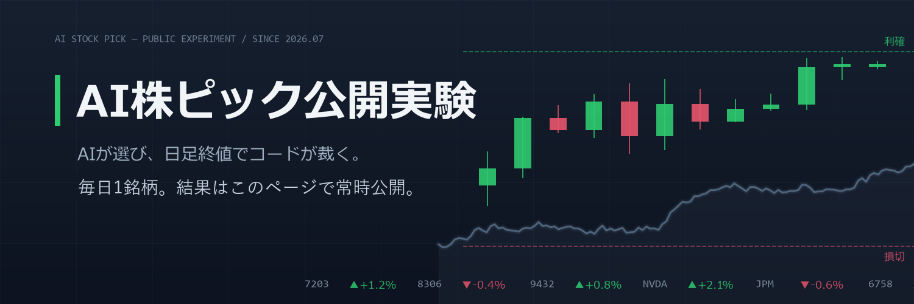

| 月 | 宣言 | 決着 | 利確 | 損切 | 勝率 | 平均損益 | 月間合計 |
|---|---|---|---|---|---|---|---|
| 2026-07 | 5 | 0 | 0 | 0 | — | — | — |
| 宣言日 | 銘柄 | 推移（直近60日） | エントリー | 利確 | 損切 | 直近終値/決済値 | 状態 | 損益 |
|---|---|---|---|---|---|---|---|---|
| 2026-07-08 | 日立製作所（6501.T） | 5,020 | 5,650 | 4,650 | 4,778.0 | 監視中 | — | |
| 2026-07-07 | 三菱重工業（7011.T） | 4,100 | 4,650 | 3,780 | 3,821.0 | 建玉 | -6.8% | |
| 2026-07-07 | Amazon（AMZN） | 246 | 285 | 228 | 246.0 | 監視中 | — | |
| 2026-07-06 | ソニーグループ（6758.T） | 3,400 | 3,750 | 3,150 | 3,468.0 | 建玉 | +2.0% | |
| 2026-07-06 | Meta Platforms（META） | 595 | 670 | 545 | 615.6 | 建玉 | +3.5% |